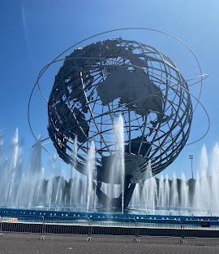

Flushing Meadows-Corona Park

Until the 19th century, the site consisted of wetlands straddling the Flushing River, which traverses the region from north to south. Starting in the first decade of the 20th century, it was used as a dumping ground for ashes, since at the time, the land was so far away from the developed parts of New York City as to be considered almost worthless. New York City Parks commissioner Robert Moses first conceived the idea of developing a large park in Flushing Meadow in the 1920s as part of a system of parks across eastern Queens. Flushing Meadows–Corona Park was created as the site of the 1939 New York World's Fair and also hosted the 1964 New York World's Fair. Following the 1964 fair, the park fell into disrepair, although some improvements have taken place since the 1990s and 2000s.
Flushing Meadows–Corona Park is owned and maintained by New York City Department of Parks and Recreation, also known as NYC Parks. Private, non-profit groups such as the Flushing Meadows–Corona Park Conservancy and the Alliance for Flushing Meadows–Corona Park provide additional funds, services, and support. The park is at the eastern edge of the area encompassed by Queens Community Board